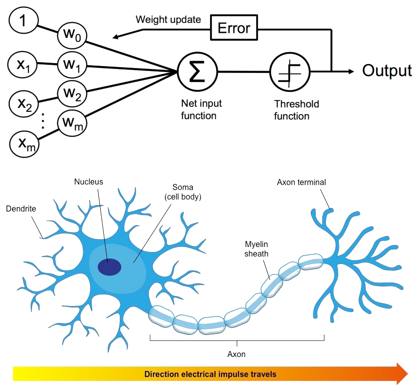
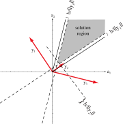
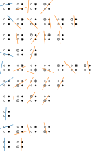
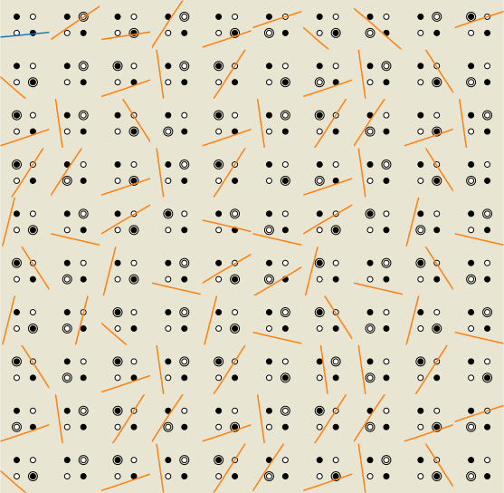
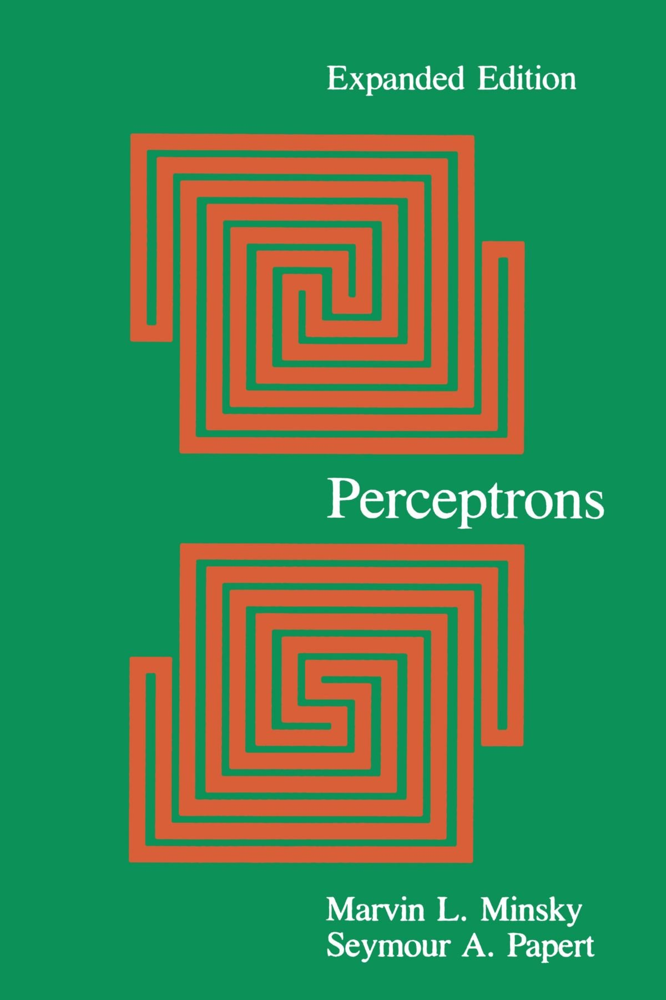

Advanced Machine Learning
05: Linear models
Schedule
| # | date | topic | description |
|---|---|---|---|
| 1 | 22-Aug-2022 | Introduction | |
| 2 | 24-Aug-2022 | Foundations of learning | |
| 3 | 29-Aug-2022 | PAC learnability | |
| 4 | 31-Aug-2022 | Linear algebra (recap) | hw1 released |
| 05-Sep-2022 | Holiday | ||
| 5 | 07-Sep-2022 | Linear learning models | |
| 6 | 12-Sep-2022 | Principal Component Analysis | project ideas |
| 7 | 14-Sep-2022 | Curse of Dimensionality | hw1 due |
| 8 | 19-Sep-2022 | Bayesian Decision Theory | hw2 release |
| 9 | 21-Sep-2022 | Parameter estimation: MLE | |
| 10 | 26-Sep-2022 | Parameter estimation: MAP & NB | finalize teams |
| 11 | 28-Sep-2022 | Logistic Regression | |
| 12 | 03-Oct-2022 | Kernel Density Estimation | |
| 13 | 05-Oct-2022 | Support Vector Machines | hw3, hw2 due |
| 10-Oct-2022 | * Mid-point projects checkpoint | * | |
| 12-Oct-2022 | * Midterm: Semester Midpoint | exam | |
| 14 | 17-Oct-2022 | Matrix Factorization | |
| 15 | 19-Oct-2022 | Stochastic Gradient Descent |
| # | date | topic | description |
|---|---|---|---|
| 16 | 24-Oct-2022 | k-means clustering | |
| 17 | 26-Oct-2022 | Expectation Maximization | hw4, hw3 due |
| 18 | 31-Oct-2022 | Automatic Differentiation | |
| 19 | 02-Nov-2022 | Nonlinear embedding approaches | |
| 20 | 07-Nov-2022 | Model comparison I | |
| 21 | 09-Nov-2022 | Model comparison II | hw5, hw4 due |
| 22 | 14-Nov-2022 | Model Calibration | |
| 23 | 16-Nov-2022 | Convolutional Neural Networks | |
| 21-Nov-2022 | Fall break | ||
| 23-Nov-2022 | Fall break | ||
| 24 | 28-Nov-2022 | Word Embedding | hw5 due |
| 30-Nov-2022 | Presentation and exam prep day | ||
| 02-Dec-2022 | * Project Final Presentations | * | |
| 07-Dec-2022 | * Project Final Presentations | * | |
| 12-Dec-2022 | * Final Exam | * | |
| 15-Dec-2022 | Grades due |
Outline for the lecture
- Linear decision boundary
- Perceptron
- Perceptron extensions
- Non-separable case
Linear Decision Boundary
A Hyperplane

A Hyperplane

An example!

Solution region

Example: linear separability

Perceptron
A Hyperplane

Ramon y Cajal
A Neuron

A Perceptron
Criterion (objective)
$$ J(\vec{w}) = -\sum_{\text{incorrect } i} l_i\vec{w}^Tx_i$$ $\vec{w}$ - parameters of our model (the perceptron)Batch Perceptron
${\cal Y}$ is the set of samples misclassified by $\vec{w}$
Stochastic Perceptron
Stochastic Algorithm Convergence theorem
If the training samples are linearly separable then the sequence of weight vectors in line 4 of Algorithm 2 will terminate at a solution vector.
Proof
Let us show that for any solution $\widetilde{\vec{w}}$ the following holds:
$$\|\vec{w}_{k+1} - \widetilde{\vec{w}}\| \le \|\vec{w}_{k} - \widetilde{\vec{w}}\| $$
Proof (1/3)
$\vec{w}_{k+1} = \vec{w}_k + l_k \vec{x}_k$
$l_k \widetilde{\vec{w}}^T\vec{x}_k > 0$
$\vec{w}_{k+1} - \alpha \widetilde{\vec{w}} = (\vec{w}_k - \alpha \widetilde{\vec{w}}) + l_k \vec{x}_k$
$\|\vec{w}_{k+1} - \alpha \widetilde{\vec{w}}\|^2 = \|(\vec{w}_k - \alpha \widetilde{\vec{w}}) + l_k \vec{x}_k\|^2$
$\|\vec{w}_{k+1} - \alpha \widetilde{\vec{w}}\|^2 = \|\vec{w}_k - \alpha \widetilde{\vec{w}}\|^2 + 2(\vec{w}_k - \alpha \widetilde{\vec{w}})^T\vec{x}_kl_k + \|l_k \vec{x}_k\|^2$
$\|\vec{w}_{k+1} - \alpha \widetilde{\vec{w}}\|^2 = \|\vec{w}_k - \alpha \widetilde{\vec{w}}\|^2 + 2\vec{w}_k^T\vec{x}_kl_k - 2\alpha \widetilde{\vec{w}}^T\vec{x}_kl_k + \|l_k \vec{x}_k\|^2$
$\vec{w}_{k}^Tl_k \vec{x}_k \le 0$ since $\vec{x}_k$ was misclassified
$\|\vec{w}_{k+1} - \alpha \widetilde{\vec{w}}\|^2 \le \|\vec{w}_k - \alpha \widetilde{\vec{w}}\|^2 - 2 \alpha \widetilde{\vec{w}}^Tl_k \vec{x}_k + \|l_k \vec{x}_k\|^2$
Proof (2/3)
$\|\vec{w}_{k+1} - \alpha \widetilde{\vec{w}}\|^2 \le \|\vec{w}_k - \alpha \widetilde{\vec{w}}\|^2 - 2 \alpha \widetilde{\vec{w}}^Tl_k \vec{x}_k + \|l_k \vec{x}_k\|^2$
$\beta^2 = \underset{k}{\max}\|l_k \vec{x}_k\|^2 = \underset{k}{\max} \|\vec{x}_k\|^2$
$\gamma = \underset{k}{\min}\left[ \widetilde{\vec{w}}^T \vec{x}_kl_k\right] > 0$
$\|\vec{w}_{k+1} - \alpha \widetilde{\vec{w}}\|^2 \le \|\vec{w}_k - \alpha \widetilde{\vec{w}}\|^2 - 2 \alpha \gamma + \beta^2$
$\alpha = \frac{\beta^2}{\gamma}$
$\|\vec{w}_{k+1} - \alpha \widetilde{\vec{w}}\|^2 \le \|\vec{w}_k - \alpha \widetilde{\vec{w}}\|^2 - \beta^2$
The distance to solution is reduced by at least $\beta^2$ at each iteration.
The distance to solution is reduced by at least $\beta^2$ at each iteration.
Proof (3/3)
$\|\vec{w}_{k+1} - \alpha \widetilde{\vec{w}}\|^2 \le \|\vec{w}_k - \alpha \widetilde{\vec{w}}\|^2 - \beta^2$
The distance to solution is reduced by at least $\beta^2$ at each iteration.
The distance to solution is reduced by at least $\beta^2$ at each iteration.
After $k$ iterations:
$\|\vec{w}_{k+1} - \alpha \widetilde{\vec{w}}\|^2 \le \|\vec{w}_1 - \alpha \widetilde{\vec{w}}\|^2 - k\beta^2$
$\|\vec{w}_{k+1} - \alpha \widetilde{\vec{w}}\|^2 \le \|\vec{w}_1 - \alpha \widetilde{\vec{w}}\|^2 - k\beta^2$
The distance cannot become negative, so no more than $k_0$ iterations:
$k_0 = \frac{\|\vec{w}_1 - \alpha \widetilde{\vec{w}}\|^2}{\beta^2}$
$k_0 = \frac{\|\vec{w}_1 - \alpha \widetilde{\vec{w}}\|^2}{\beta^2}$
Setting initial paramters to zero $\vec{w}_1 = \vec{0}$:
$k_0 = \frac{\alpha^2\|\widetilde{\vec{w}}\|^2}{\beta^2} = \frac{\beta^2\|\widetilde{\vec{w}}\|^2}{\gamma^2} = \frac{\underset{i}{\max} \|\vec{x}_i\|^2\|\widetilde{\vec{w}}\|^2}{\underset{i}{\min}\left[l_i\vec{x}_i^T\widetilde{\vec{w}}\right]}$
$k_0 = \frac{\alpha^2\|\widetilde{\vec{w}}\|^2}{\beta^2} = \frac{\beta^2\|\widetilde{\vec{w}}\|^2}{\gamma^2} = \frac{\underset{i}{\max} \|\vec{x}_i\|^2\|\widetilde{\vec{w}}\|^2}{\underset{i}{\min}\left[l_i\vec{x}_i^T\widetilde{\vec{w}}\right]}$
Perceptron Extensions
Margin


Perceptron with Margin
Perceptron Relaxation
Define the loss as $$ J_r(\vec{w}) = \frac{1}{2} \underset{\text{incorrect}}{\sum} \frac{(\vec{w}^T\vec{x}l - b)^2}{\|l\vec{x}\|^2} $$
Then the gradient is
$$
\nabla_{\vec{w}} J_r = \underset{\text{incorrect}}{\sum} \frac{\vec{w}^T\vec{x}l - b}{\|l\vec{x}\|^2}\vec{x}l
$$
Perceptron Relaxation
Perceptron Relaxation: interpretation
$$ r(k) = \frac{b - \vec{w}_k^T\vec{x}_kl_k}{\|\vec{x}_kl_k\|} $$
Non-separable case
Separable example
Multiple restarts
Non-separable example
AI winter
What we usually encounter

Criterion (objective/loss)
$$ J(\vec{w}) = -\sum_{\text{incorrect } i} l_i\vec{w}^T\vec{x}_i$$ $\vec{w}$ - parameters of our model (the perceptron) $$ J_{\text{MSE}}(\vec{w}) = \frac{1}{2}\sum_{\forall i} (\vec{w}^T\vec{x}_i - b_i)^2$$ $$ \nabla_{\vec{w}} J_{\text{MSE}} = \sum_{\forall i} (\vec{w}^T\vec{x}_i - b_i)\vec{x}_i$$Least Mean Squares

Least Mean Squares